-
Monkey D. Luffy
Capitão
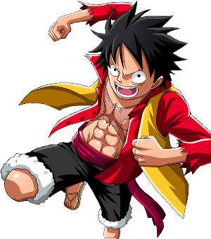informações
Fundador e o capitão do cada vez mais infame e poderoso Piratas do Chapéu de Palha, bem como um de seus principais lutadores. Seu sonho de vida é se tornar o Rei dos Piratas, encontrando o lendário tesouro deixado pelo falecido Rei dos Piratas, Gol D. Roger. Ele acredita que ser o Rei dos Piratas significa ter a maior liberdade do mundo.
Bando: Piratas do chapéu de palha.
Akuma no Mi: Gomu Gomu no Mi.
Gomu Gomu no Mi: Conhecida originalmente como a Hito Hito no Mi, Modelo: Nika, é uma Akuma no Mi do tipo Zoan Mítica que permite ao usuário se transformar no lendário "Deus do Sol" Nika e ganhar seus atributos, notavelmente um corpo com propriedades da borracha.
Recompensa: 3.000.000.000 de Belly.
-
Roronoa Zoro
Espadachim
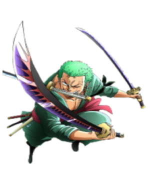informações
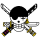Roronoa Zoro, também conhecido como "Caçador de Piratas" Zoro, é o combatente dos Piratas do Chapéu de Palha e um ex-caçador de recompensas. Ele foi o primeiro membro a juntar-se à tripulação. Sua fama como mestre espadachim e sua grande força, juntamente com as ações de seu capitão.
Bando: Piratas do chapéu de palha.
Akuma no Mi: Não usuário.
Recompensa: 320.000.000 de Belly.
-
Vinsmoke Sanji
Cozinheiro
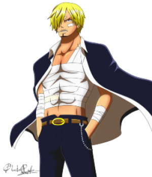informações
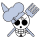"Perna Negra" Sanji, nascido como Vinsmoke Sanji, e também é o cozinheiro dos Piratas do Chapéu de Palha. Seu sonho é encontrar o paraíso dos chefes, All Blue, sendo esse o lugar onde o East Blue, o West Blue, o North Blue e o South Blue se encontram, juntamente com sua vida selvagem.
Bando: Piratas do chapéu de palha.
Akuma no Mi: Não usuário.
Recompensa: 330.000.000 de Belly.
-
Brook
Músico
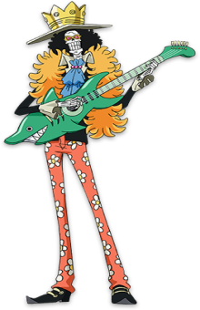informações
Brook é o Músico do Bando. Ele é um esqueleto que os Chapéus de Palha encontraram a bordo de um navio fantasma depois de entrarem no Triângulo Florian. Sua Akuma no Mi o torna um pseudo-imortal por causa de seus poderes.Ele preenche o cargo do tão esperado músico que Luffy queria para sua tripulação desde que sua jornada começou.
Bando: Piratas do chapéu de palha.
Akuma no Mi: Yomi Yomi no Mi.
Yomi Yomi no Mi: É uma Akuma no Mi tipo Paramecia, que permite ao usuário voltar à vida depois de morrer. O nome é derivado de Yomigaeru, que significa "Ressurreição", ou, propriamente dito, Yomi, é o nome do submundo japonês .
Recompensa: 83.000.000 de Belly.
-
God Usopp
Atirador
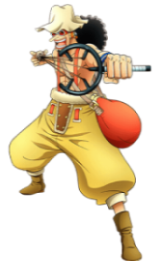informações
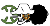"God" Usopp é o Atirador dos Piratas do Chapéu de Palha. Após colaborar com os Chapéus de Palha para derrotar Kuro e os Piratas do Gato Preto, ele foi convidado a se juntar à tripulação. Apesar de sua covardia normal, Usopp sonha em se tornar um corajoso guerreiro do mar como seu pai, e vive todos os dias em busca de viver à altura deste sonho.
Bando: Piratas do chapéu de palha.
Akuma no Mi: Não usuário.
Recompensa: 200.000.000 de Belly.
-
Chopper
Médico
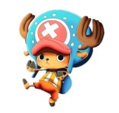informações
Tony Tony Chopper é uma rena. Ele é o médico da tripulação dos Piratas do Chapéu de Palha. Chopper é uma rena que, após comer a Hito Hito no Mi, adquiriu a habilidade de se transformar e raciocinar como os humanos.
Bando: Piratas do chapéu de palha.
Akuma no Mi: Hito Hito no Mi.
Hito Hito no Mi: É uma Akuma no Mi do tipo Zoan que permite que seu usuário se transforme em um híbrido de humano e um ser humano integral à vontade. "Hito" é japonês para "humano". ps: Caso um humano coma esta Akuma no Mi, ele ficará mais inteligente.
Recompensa: 100 Belly.
-
Nami
Navegadora
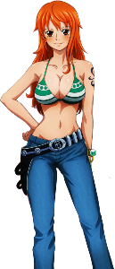informações
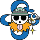A "Gata Ladra" Nami era membro dos Piratas do Arlong e juntou-se inicialmente aos Chapéus de Palha com a intenção de roubá-los, mas se tornou de fato um dos Chapéus de Palha depois que eles se rebelaram e derrotaram Arlong. Seu sonho é fazer um mapa do mundo inteiro.
Bando: Piratas do chapéu de palha.
Akuma no Mi: Não usuária.
Recompensa: 66.000.000 de Belly.
-
Nico Robin
Arqueóloga
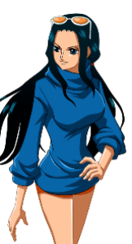informações
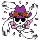Nico Robin, também conhecida como "Criança Demônio" e "Luz da Revolução", é a arqueóloga dos Piratas do Chapéu de Palha. Ela é a única sobrevivente da ilha destruída de Ohara, localizada no West Blue. Como resultado, ela é atualmente a única pessoa no mundo com a capacidade de ler e decifrar Poneglyphs, uma habilidade que é considerada proibida e que ameaça o Governo Mundial.
Bando: Piratas do chapéu de palha.
Akuma no Mi: Hana Hana no Mi.
Hana Hana no Mi: É uma Akuma no Mi tipo Paramecia que permite ao usuário replicar e brotar pedaços de seu corpo a partir da superfície de qualquer objeto ou coisa viva. "Hana" é a palavra japonesa para "Floração" e "Flor", e reflete a natureza do poder do usuário a brotar suas partes do corpo como uma flor que floresce.
Recompensa: 130.000.000 de Belly.
-
Franky
Carpinteiro
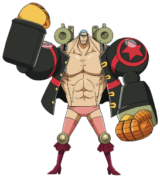informações
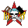Franky é um cyborg de 36 anos de Water 7 e foi introduzido na história como o líder da Família Franky, um grupo de desmantelamento de navios. A pedido da sua família, Franky foi permitido se juntar aos Chapéu de Palha para realizar seu sonho de criar e dirigir um navio capaz de dar a volta ao mundo, o Thousand Sunny.
Bando: Piratas do chapéu de palha.
Akuma no Mi: Não usuário.
Recompensa: 94.000.000 de Belly.